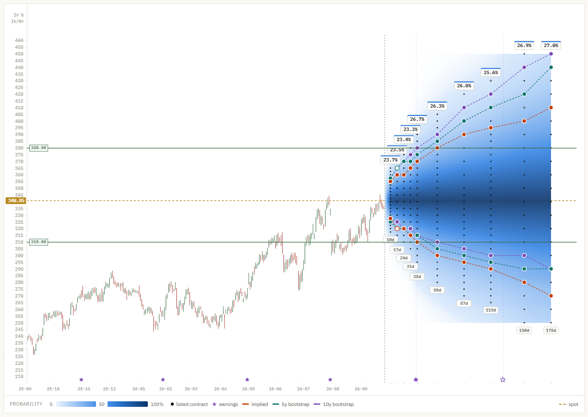
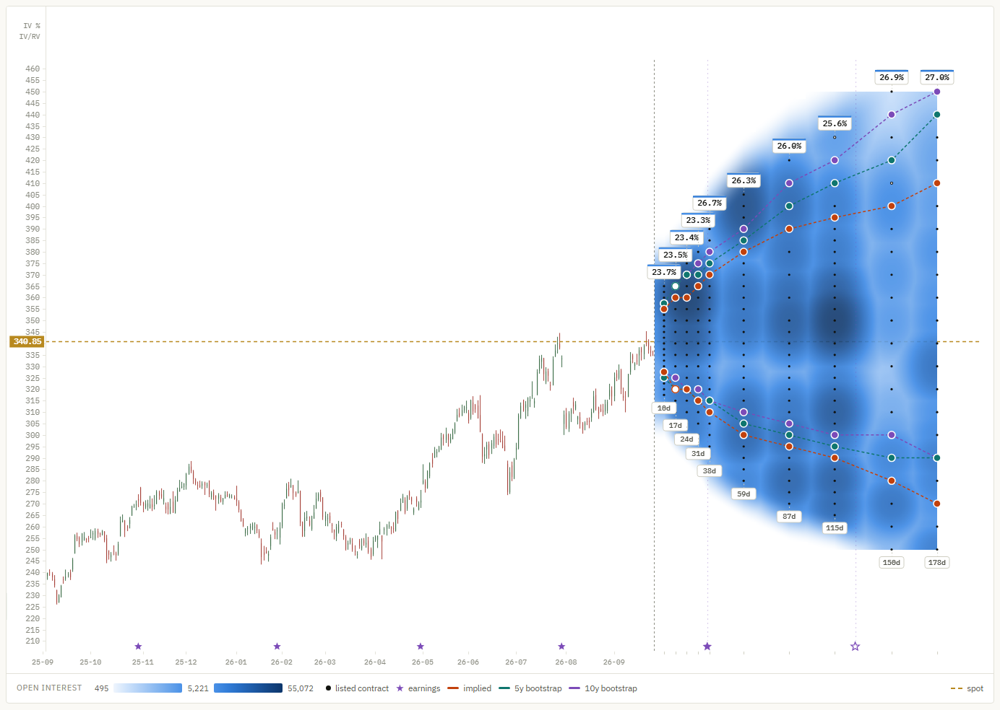

Use cases
OptionsCone is not only for option traders. Anyone who holds a stock, or is about to buy one, can use the option market and the stock's own history to put numbers on the questions that come before and during a trade.
Every example below uses the same data: Apple (AAPL) on 22 September 2026, with the stock at 340.85. The numbers come straight from the app's tooltip and data table. Each question is answered three ways: by the option market (implied) and by the stock's own last five and ten years (5y, 10y).

1. Build realistic scenarios
Will the stock reach my price target?
Where to look: the listed strike nearest your target, at the expiry nearest your date. The touch figure answers "does it get there at some point"; expire answers "is it still there on that date".
Example: a target of 400, 17% above spot, by 19 March (178 days).
| 400 by 19 Mar | Implied | 5y | 10y |
|---|---|---|---|
| Touches 400 | 37.6% | 52.7% | 62.4% |
| Above 400 on 19 Mar | 19.0% | 33.3% | 43.2% |
Read it as: the option market puts the chance of seeing 400 within six months at a bit over one in three. Apple's own history says better than even, because the stock rose strongly over both windows, and the bootstrap keeps that trend. Whether the next six months resemble the last ten years is exactly the question the gap between the columns raises.
Will a losing position get back to break-even?
Where to look: your entry price as a level above spot.
Example: bought at 380, now 10% under water.
| Back to 380 | Implied | 5y | 10y |
|---|---|---|---|
| Within 87 days (18 Dec) | 36.9% | 50.3% | 56.9% |
| Within 178 days (19 Mar) | 55.2% | 69.2% | 75.9% |
| Above 380 on 19 Mar | 27.9% | 44.1% | 53.0% |
Read it as: by the market's pricing, a round trip to break-even within three months is less likely than not, and roughly even within six. Holding on "until it comes back" is a bet with odds, and the table shows them. Note the last row: even when the price does get back to 380, it often does not stay there.
What range should I expect?
Where to look: the contour lines. Set the track probability to, say, 30%: each line then marks, expiry by expiry, how far up and down the price has a 30% chance of reaching. The space between the lines is the range the price is likely to explore.
Example: within 87 days, the option market gives AAPL a 36.9% chance of touching 380 (+11.5%) and a 34.9% chance of touching 300 (−12.0%). The market sees the two directions almost evenly. The 10-year history gives 56.9% up and 26.0% down, because it replays the uptrend of the past decade.
2. Manage risk at entry
Where does a stop loss make sense?
Where to look: the stop level below spot, at the expiry that matches your holding period. The touch probability is the chance the stop is triggered, at least if the stop is executed at the level.
| Touched within 87 days | Implied | 5y | 10y |
|---|---|---|---|
| Stop at 310 (−9.1%) | 46.9% | 42.0% | 37.0% |
| Stop at 290 (−14.9%) | 25.7% | 18.5% | 17.7% |
Read it as: a stop 9% below spot over three months is close to a coin flip, by every model. It is more likely to be hit by ordinary movement than by a real change in the story. A stop 15% below is hit about one time in four by the market's pricing. Neither is right or wrong; the numbers show what each choice costs in expected stop-outs.
Touched or stayed?
The same 310 level has a 46.9% implied chance of being touched by 18 December, but only 23.3% of the price still being below it on that day. From history the gap is even wider: 37.0% touch against 13.2% below at the end (10y). Half or more of the moves through the stop came back.
That difference is the price of a hard stop. It is also why OptionsCone shows touch by default: for a stop, a target or a short option strike, reaching the level is what matters, not where the price ends.
Is there an event inside my holding period?
Where to look: the stars on the date axis are earnings dates, and the volatility badges above each expiry show how the market prices the time around them.
Example: Apple reports on 29 October after the close. The expiry of 23 October has a model-free implied volatility of 23.3%; the next one, 30 October, the first to include the report, jumps to 26.7%. The market is pricing an earnings move. A position held across that date carries a risk that the ones closed before it do not.
3. Identify opportunities
Where do the market and the history disagree?
Where to look: the three contour lines. Where they run together, the market prices roughly what the stock has done before. Where they separate, one of them is expecting something the other does not.
Example: for AAPL the pattern is clear on both sides. Above spot the history lines lie far outside the implied one: the past decade's uptrend makes big up moves look likely. Below spot it is the other way round. A touch of 290 within six months has a 42.5% implied probability, against 29.7% (5y) and 26.8% (10y).
Read it as: the option market charges for more downside than the last ten years produced. That gap is what buyers of downside protection pay and what sellers of it are paid for. It can be a premium for risk the history did not contain, or a sign the market knows something the past cannot. The tool shows the gap; it does not tell you which it is.
Is volatility high because the stock is moving, or because of what is coming?
Where to look: the badges. The top number is the model-free implied volatility of each expiry; when there is room, a second number shows its ratio to realized volatility. Realized volatility itself is in the figures above the chart.
Example: AAPL's realized volatility is 26.2%. The first four expiries sit at about 23.3% to 23.7%, a ratio of 0.89 to 0.91: the market expects the next weeks to be calmer than the recent ones. From the 30 October expiry onwards the ratio is back around 1.0, lifted by the earnings date.
Read it as: a high ratio across all expiries means the market is charging for more movement than the stock is showing. A bump at one expiry points to an event. A ratio below one means recent moves were larger than the market expects to continue.
Where is the liquidity?
Where to look: switch the cone to open int. or spread. Dark patches in open interest show the strikes where large positions sit; on the spread map, darker means tighter quotes. For an option trade, the dark areas on the spread map are where the quoted price is a price you can actually get.

Go further
Every number on this page comes from one download and a few clicks. The manual explains each control, and the methods explain how each probability is calculated and where its limits are.